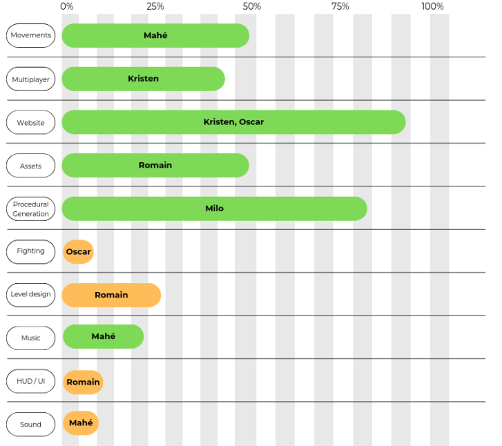

Development progress as the first technical presentation approaches
As the movements had to be usable for each of the game's levels, we had to think in terms of how to make them work. In addition, we had to avoid action problems that could prevent another action from working, and adapt the code to the tilemap operation of the levels. and adapt the code to the tilemap operation of the levels.
When designing the assets, a number of challenges arose. Firstly, the animations took a long time to create, as Pixel Studio's default mode didn't allow for fast animation. But we found a more advanced mode that optimized the realization of these animations, reducing the time spent on them. Secondly, the assets were too dark. Indeed, without assembling the assets created, we hadn't noticed that the whole was very dark and the colors not very diverse, often tending towards a bark brown.
As explained above, the design of the website posed no major challenges. The only more difficult part was mastering CSS to find the right color schemes, dimensions and shapes for the different elements of the site.
When we integrated multiplayer into our game, we quickly noticed that the client position that was not in the game was reset to zero as soon as we tried to move. It turns out that the problem lay in Mirror's multiplayer architecture. In this architecture, the host has authority over all game data and controls the movements of other players, who are not allowed to move as they wish. This authority can be delegated to all clients.
By default, Unity smoothes images so that pixels are not visible. However, in our case, having large pixels is a choice. We had to tell Unity to change the rendering method for our assets. There was also a problem with gaps between certain tiles in the level, which appeared when the character moved. To solve this problem, we used an Atlas Sprite, which allowed us to assemble our assets to optimize performance and solve position calculation problems at runtime.
One of the first PoC challenges for procedural generation was to ensure the validity of the levels produced. One of the first ways of doing this was to show all the information for each part in the graph and check by hand. This method works at first, but becomes limiting as soon as we try to make a level of more than three rooms. To generate a graphical representation, we first used a graphics library to make a pixel-by-pixel image. By default, all image readers smooth pixels, which has an impact on rendering visibility. After some time spent trying to get around this problem, we turned to the much more flexible SVG format.